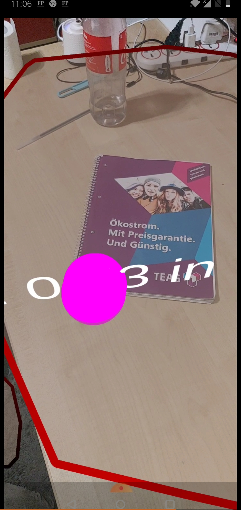
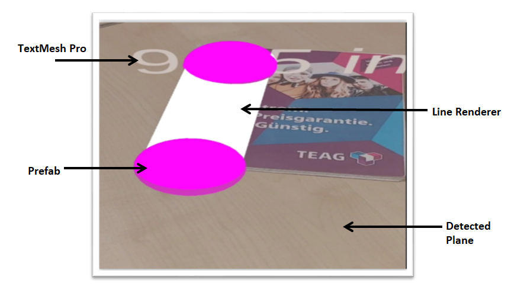

Professorship of Distributed and Self-Organizing Computer Systems
Chemnitz University of Technology
Chemnitz, Germany
Abstract:
The report describes the technology to measures the size of a real-time object using a smartphone.
The user has to scan the objects within that environment by the cell phone’s camera. Computer vision algorithms are utilized to fetch the object’s point cloud.
This paper also describes various frameworks that can be utilized for developing an AR application to estimate the size of the object.
Also, a demo Augmented Reality application was developed using ARCore technology for the Android platform.
1. Introduction to Augmented Reality(AR)
Augmented Reality is a blend of virtual things into the real world environment.
Essentially, augmented reality puts the graphical pictures produced by PCs into reality. “AR is a slight variation of Virtual reality or virtual environments (VE)” [1].
virtual technologies immerse the user into the virtual environments, while immersed users can’t able to see the real world environment other than the synthetic world environment.
Whereas in AR virtual objects will be immersed with the real world environment and users can see the real world with the virtual objects imposed in it. Figure 1 shows a real world vase,
which is a real world object and in figure 2 there is a bunch of flowers, which are virtual objects. In figure 3 there is a vase with the flowers imposed in it which appeals to be real, this is called augmented reality. AR has been used in numerous applications, it utilized in the medical, military,
museums, space stations, education, mechanical technology, amusement, gaming, shopping, etc.[1][2].
Figure 3: A real vase composed with the virtual flowers[3].
1.1. Use case of Augmented Reality
In the market, they are many fields which use the augmented reality, it been used to know better information where it embellishes human communication with the real world.
Applications which use AR are;[4] IKEA a famous furniture brand uses its augmented reality application, in this application the images of the furniture stored.
Users can use this application by placing images virtually in their desired locations and can check whether furniture suitable for their places. In military training,
augmented reality used in dealing with the dangerous materials by adopting the wearables of AR. In the medical fields, AR being used as locating the problems in
the human body to operate. AR has been using in the Air Force to educate the younger youth, here the how rocket launch approaches the target has been shown to the
visitors by providing the mobiles which are especially for this purpose. In games,[5] PokeManGo is an example which is purely augmented reality application which is being
widely used. Applications like [6] Facebook, [7]Snapchat, [8]Instagram provides augment filters to experience augmented reality.
1.2. AR Development to Mobile AR
Ivan Sutherland the Harvard professor and a computer scientist and his student Bob Sproull invented The Sword of Damocles in 1968 which was the first discovered as augmented reality device.
The device was the head-mounted display which is larger than the roof, it gives a user experience that he or she in the other world and these displays are generated by the computer graphics. Further, in 1974, Myron Krueger developed Video place which
was done by combining the projection systems and video cameras. In this, a shadow was generated on the screen, which created an intelligent situation where clients feel like they
are in and facing that environment.[9][10][11]
Figure 4 : Revolution of AR Development from Head mounted displays to Mobile AR.[9].
Boeing researcher named Tom Caudell was given the term “Augmented Reality” and by Louis Rosenburg, in USAF Armstrong Lab the first augmented reality operational system
using Virtual Fixtures was developed in 1922 which was thought as the early version of the AR systems and this system working environment is based on a robot which places
the data on the top of the worker's. Julie Martin has created the first theatre production in AR which was named “Dancing in Cyberspace” where aerialists dancing around the
virtual things as a bit of craftsmanship. To test flights NASA used augmented reality to intensify pilotage in 1999. In 2000, AR ToolKit by Hirokazu Kato Nara Institute of
Science and Technology software was created and released which specification was to capture the real-world action by combining it with the virtual object’s communication.
The NFL used Skycam in 2003 and augmented reality started to spread in print media in 2009. [9][10][11]
ARToolKit made their software available on the internet platforms in the same year and later years augmented reality field immense revolution. The applications or software
in mobile phones are developed and this mobile AR development came into existence through the sensors which were already manufactured in mobile devices by mobile developers.
Now in the market there are several augmented devices are existed and many software are being developed. [9][10][11]
2. Computer Vision
Computer vision is “the construction of explicit, meaningful descriptions of physical objects from images” (Ballard & Brown, 1982).
It is detected in various fields that include computer science, mathematics, physics, and psychology. Given such a broad range of subjects, many experts believe that all of them are moving us closer to artificial intelligence and augmented reality.
It is used to implement face detection, image recovery, gaming, and biometrics. Facebook, Snapchat, and Pokemon Go are some of the popular applications which are developed based on computer vision techniques.
We have listed out a few computer vision techniques that are widely used.[12]
Image Classification: Image classification indicates the task of deriving data.
Convolutional Neural Networks (CNNs) plays a vital role in the field of medical image study.
It takes the image as an input and provides the output which identifies the presence of diseases[12][13].
Object Tracking: This is the activity of characterizing multiple objects in a single picture[12].
Semantic Segmentation: Partitions the whole image into a bunch of pixels, semantic segmentation tries to identify the job of each pixel [12].
Instance segmentation: Instance segmentation classifies all the different instance classes, for example, naming ten cars with ten unique colours [12].
3. SLAM
SLAM stands for Simultaneous Localization and Mapping. Today, AR is possible due to SLAM. For Augmented Reality, it is required to know the device location in the environment. SLAM outline the surrounding using computer vision technique and localize the device.
The below figure shows the process flow of SLAM, how it is implemented in various applications [14].
Figure 5: SLAM .
Sensor data: Sensors are used to feed the data to front-end which is then used for pose estimation purposes. Cell phones consist of camera sensors, accelerometer, and gyroscope [14].
Front-End: Feature extraction is the first job that needs to be done. The aim is to find corner points of that specific object and should be able to track these points within multiple frames. [14]
Back-End: It handles all the other tasks such as localizing the current location of a device and establishing the connections between various frames in the environment. [14]
SLAM estimation: The result consists of feature points position and their connections among different frames. It also contains the location of the device in the world. [14]
4. AR Frameworks
Frameworks are those which used to develop AR applications for any devices example; smart devices, desktops. They are several AR frameworks accessible to the developers
for free of prices, but if a developer wants to develop an authorised application then he or she needs to get the licensed versions.
4.1.AR Frameworks for Android
Android application has shown greater extent growth and has been registered the trend in the market [15]. Every individual on the planet uses smartphones
especially the android phone. After being researched the AR frameworks android, we found out they are plenty like ARCore, ARToolKit, Augment, Aurasma, BlippAR,
CraftAR, EasyAR, Kundan, LayAR, OpenCV, PixLive, Vuforia, Wikitude, XZIMG, etc., Based on the marker-based tracking, markerless tracking, and GPS tracking we have
concluded the six AR frameworks which have the all basic specifications and these frameworks are most widely used among other and are efficiently used by the bigger
companies for their AR development are;
1. ARCore [16]
2. EasyAR [17]
3. OpenCV [18]
4. Vuforia [19]
5. Wikitude [20]
6. XZIMG. [21]
ARCore: is Google’s framework for developing the augmented reality application. Users can be provided with the different APIs, from which user's mobile has
a sense which can recognise its environment, interpret the real world and provides the information interactively. ARCore main three key feature is Motion tracking,
Environmental Understanding, Light estimation from which it tracks the position of the phone, automatically detects the location of various surfaces and estimate lighting
conditions of the environment and It uses SLAM ( Simultaneous Localization and Mapping )[14] technology to understand whether the phone is relative to the real world or not.
From the latest version, 1.18 user can create the augmented faces assets which can even be uploaded to android studio. [16]
EasyAR: characterized as a development framework for AR based applications, EasyAR has a web-development stage through which clients can enroll
their tasks and get the licenses expected to test and publish their applications. Like its name, it provides sensing abilities to the real-world environment,
a standalone SDK, EasyAR Sense plugin with Unity exposes the sense features and developed in a Unity environment. It offers Motion Tracking, Planar Image Tracking,
Cloud Recognition, 3D Object Tracking, Image target data, Multi-target, Target Configuration, Surface Tracking, Sparse Spatial Map and Dense Spatial Map. To achieve more
AR capabilities it has the brand-new algorithm components and platform support. EasyAR Sense 4.0 has been recently released version.[17]
OpenCV: (Open Source Computer Vision Library), It is an open-source computer vision and Artificial Intelligence software library which support a familiar
infrastructure for computer vision applications and to quicken the utilization of machine perception in commercial products. Being a BSD-authorized item,
OpenCV makes it simple for organizations to use and adjust the code. The algorithm that OpenCV provides can be used to detect and recognize faces, identify objects,
classify human actions in videos, track camera movements, track moving objects, extract 3D models of objects, produce 3D point clouds from stereo cameras, stitch images
together which produces a high-resolution image of an entire scene, find identical images from an image database, it enables users to remove red eyes from images taken using
flash, by detecting the eye movements, the main feature of the OpenCv is to recognize scenery and establish markers to overlay it with augmented reality. OpenCV is widely used by
companies, research groups and governmental bodies. [18]
Vuforia: identified as one of the most utilized frameworks for creating AR applications, it has the SDK for the many development platforms
and additionally vuforia supports the web-based environment and Vuforia API for an optimal AR experience. In this environment user can create the markers and
can manage too if the user wants to test and publish the application, he or she can acquire the licenses. Features of the vuforia are model targets, area targets,
image targets, object targets, multi-targets, cylinder targets, VuMarks, External Camera, ground plane, these can be accessed anywhere via the cloud or privately
stored in the user's device. It allows users a markerless tracking, through the Extended Tracking and Smart Terrain technologies. The latest available version is
vuforia Engine 9.2. [19]
Wikitude: comprises in a AR 3D viewer that gives the user a versatile application and a web-based management platform, through which users are empowered to create
their markers and connect them to 3D models and other virtual components. It likewise offers an SDK accessible in development platforms, permitting the usage of utilizations
with Wikitude's assets. This framework can able to Image Recognition, Object and Scene Recognition, Geo AR, Cloud Recognition, 3D Rendering, Video Drawables,
Instant Tracking and it even makes users utilize markerless innovation SLAM. The latest version of Wikitude 8.10 enables Alignment tracking. [20]
XZIMG: It is known to be very professional on image processing and augmented inventive reality projects.
It provides a technology of face tracking with the immense value and its augmented face is available for the developers to develop effective AR based applications.
With the technologies of XZIMG, Fiducial markers and Images tracking users can generate the augmented vision which can be deployed in the windows and web-development
platforms also. The latest version magic face is a trend now as it provides the deformable face-tracking technology which was used in the face replacement and make-up mobile
applications.[21]
4.2. Comparison of AR Frameworks
Figure 6 : Comparison of Frameworks according Cost, Technical Specifications, Development platforms.
The above table shows different systems as of now trend in the market where it additionally portrays its cost structure,
platform dependency, development frameworks and it also defines the programming languages and APIs supported by these frameworks.
Where ARCore and OpenCV are Open sources and free of charge, whereas Vuforia, XZIMG, Wikitude and EasyAr provides free SDK for development but
commercial purpose one must need to purchase its monthly or yearly package based on their requirements. Packages are depending on the individuals
and for business purposes, for business, it is more costly than the individuals. Above listed all frameworks supports the augmented application for android
and windows platforms, ARCore, OpenCV, Vuforia, Wikitude support for IOS too and EasyAR and XZIMG supports the MAC OS. We can also see the development platforms
and how these are programmed and accessible to users to develop AR applications. With the unity packages included, can develop the applications in all platforms
as it is supported by all the frameworks. Unity is freely available to everyone, to start with the AR development it will be very useful as it has many tutorials
regarding the SDK, API installation.
5. Unity
5.1. IDE
A framework is a set of libraries, whereas the Integrated Development Environment (IDE) is software for developing applications that aggregate tools into a single graphical user interface (GUI). An IDE ordinarily comprises a source code editor, debugger, compiler, etc. Unity is one of the recommended IDE to build AR applications by most of the developers.
Unity is the best game development engine in today’s time. This is not just a case; Unity has also provided a set of solutions to build AR applications.
Unity is not just famous for AR but also for VR and MR platform as well. Almost 90% of AR experiences in HoloLens are developed in Unity.
Unity also provides us with an Asset store, it is like a hub where developers develop their asset (asset could be any type of file like image or audio which is supported by Unity) and those assets can be used by other developers in their project or game to add on some features. Unity provides many build-in components using which one can develop a basic application without even writing a single line of code.
The best thing about Unity is, most of the frameworks have plugins for Unity [22].
5.2. AR Foundation
Unity proposes to use AR Foundation package for developing AR applications as it adds high-end functionalities.
AR Foundations allows the developer to work with AR frameworks inside Unity. This package acts as an interface.
AR Foundation supports various AR features but it does not apply any single feature on its own.
To implement those features developers also need to install an additional package based on the platform. [23]
ARCore XR Plug-in
ARKit XR Plug-in
Magic Leap XR Plug-in
Windows XR Plug-in
ARCore supports Unity and it provides ARCore XR Plug-in to develop an application on the android platform. Like ARCore , ARKit also provides ARKit XR Plug-in to build applications on IOS.
Magic Leap XR Plug-in for Magic Leap and Windows XR Plug-in for HoloLens[23].
The below table describes the various functionalities of AR Foundation supported by different frameworks based on which plugin is installed along with AR Foundation package.
This AR application was build to determine the size of an object.
This application was developed for the Android operating system by implementing ARCore XR plugin within Unity.
It provides access to develop augmented reality applications.
Below is the list of functionalities of AR Foundation which are supported by ARCore XR Plugin.
6.2. ARCore Supported Functionalities
ARCore uses SLAM process for tracking purposes. Point Cloud: ARCore identifies specific features (corner points) of that image, whenever a user captured image from its mobile camera. These corner points are called feature points. It uses these points to calculate the change in the position of the picture from one frame to another.[24]
Plane Tracking: Planes are identified by ARCore by utilizing these feature points. Unlike Wikitude, ARCore just recognizes horizontal and vertical planes yet but the new arrival of Wikitude SDK 8.1, can even deal with strangely calculated surfaces also like walls or doors. [24]
Light Estimation: ARCore identifies the information of light of the current environment and provides the same colour depth and brightness to the virtual object to provide the real appearance. [24]
2D Image Tracking: Augmented Images is a highlight that permits to develop AR applications that can react to explicit 2D pictures. When users point their cell phone's camera at a specific picture, they trigger AR experience. ARCore is also capable of tracking moving pictures as well, for example, a banner on a side of a moving vehicle. [24]
Face Tracking: It detects a face and then tracks various regions of that face. It sets some kind of animation or any type of model over that region. Face Manager is used for configuration and each detected face a new GameObject is created. [23]
6.3.Implementation of build-in components:
Unity provides many built-in components which make the developer easy to build augmented reality application.
Below are some build-in components which are implemented in the application.
AR Plane Manager: To deal with planes and flat surfaces, Unity provides us with AR plane manager. The AR Plane Manager will execute the Plane Prefab to represent the plane, every time the plane is detected[25].
Prefab: Whenever a GameObject is reused in multiple scenes then it should be converted into Prefab [25].
The below figure 8 shows that a Plane Prefab requires a GameObject but as per the figure 9 we have converted that GameObject into Prefab because whenever the plane is detected, Plane Prefab will be executed multiple times. So to reuse GameObject it is necessary to convert it into Prefab. Figure 8Figure 9.
Line Renderer: Line Renderer is a component that draws a line between an array of at least two points in the 3D environment based on the Material Element type. In this application Material Element type is ‘Default Line’[26].
AR Raycast Manager: It is necessary to include Raycast Manager while working on plane detection, especially when multiple objects are involved. Because we need to detect whether we have a flat surface to place objects on it or not.
AR TextMesh Pro: It provides new and improved text rendering procedures and it consists of various highlights like character font, font-size, word, and paragraph spacing, over 30 Rich Text Tags accessible Custom Styles and many more for text formatting purpose[27]
This app was developed to calculate the size of the real-time objects which are detected on the plane as ARCore can understand the surrounding environment and it also supports horizontal and vertical plane detection and point cloud features.
6.4.User-defined component:
The C# programming language was used to build a user-defined component. MearurementController.cs file is the name of the user-defined component that calculates the distance from the starting point until the endpoint as shown in the figure below.
MearurementController.cs file plays an essential role; it is the core of this entire application. The part gives two unique checks.
When a user touches the screen, then at first it gets the touch position. At that point, Raycast is utilized to distinguish if there is any clash on the plane at that touch position. If there is any clash, which implies the user is estimating the floor or object where the plane previously recognized. It set the beginning point as obvious and gets the hit pose which will be the position at the plane area. This is the thing that will set the circle (Measuring point prefab) at the particular area from where the user will start measuring.

Figure 10: First Check.
The second check is made to identify the endpoint when the user starts touching the screen from one point to another. Same as before it calculates the touch position and Raycast is used to identify if there is any collision on the plane. A default line is drawn between the starting point and ending point through Line Render.
In the end, the distance between the start and endpoint is calculated in inches and displayed over TextMeshPro.

Figure 11: Second Check.
7.Pros & Cons
Below is the list of benefits and drawbacks of our application.
Pros:
One can easily measure the size of the real-time object without carrying a ruler.
Large objects can be measured efficiently by a single person without lifting or moving them from one place to another.
It is a less complicated and user-friendly application with more effective results. Cons:
Application won’t be able to detect plane or flat surfaces without patterns.
This application might not be able to track walls, doors, or any vertical up planes, as this AR application developed on ARCore,
it only supports horizontal and vertical plane detection.
8.Conclusion:
This report describes various frameworks available in the market to develop Augmented Reality applications for the Android platform.
The goal was to provide in-depth knowledge of different frameworks and their functionalities. This paper recommends Unity as it is the most favourable one among all developers as it is open source and provides a wide range of built-in components which makes development work much easier. Most of the frameworks have plugins for Unity which leads developers to build applications on multiple platforms. This report also proposed a way to build an Augmented Reality application to measure the size of the objects. The application is built on Unity with ARCore XR plugin. During the testing phase, we discovered that this app is not efficient for measuring small objects such as erasers. This application only supports the Android operating system.
Our future plan is to make this application as a platform independent and also to resolve its issues while measuring small objects.
9.Acknowledgements
We would like to thank our advisor Verena Traubinger M.SC for valuable advice and guidance
10. Individual Contribution
Figure 12: Contribution Table
11.References
[1] Azuma, Ronald T, “A Survey of Augmented Reality”, 1997. [online] Available: Teleoperators and Virtual Environments 6 (4): 355–85. https://doi.org/10.1162/pres.1997.6.4.355. [Accessed: July. 07. 2020].
[2] Wagner, Daniel, and Dieter Schmalstieg. 2009. “History and Future of Tracking for Mobile Phone Augmented Reality”. [online] Available: https://doi.org/10.1109/ISUVR.2009.11.[Accessed: July. 02, 2020].
[5] Niantic,Inc., ”Catch Pokémon in the Real World with Pokémon GO”, 2020. [online] Available: https://www.pokemongo.com/en-us/ [Accessed: July. 07, 2020].
[9] Arth, Clemens, Raphael Grasset, Lukas Gruber, Tobias Langlotz, Alessandro Mulloni, and Daniel Wagner, “The History of Mobile Augmented Reality”, 2015. [online] Available: http://arxiv.org/abs/1505.01319.[Accessed: July. 07, 2020].
[10] Wagner, Daniel, and Dieter Schmalstieg. “History and Future of Tracking for Mobile Phone Augmented Reality”, 2009. In 2009 International Symposium on Ubiquitous Virtual Reality, 7–10. [online] Available: https://doi.org/10.1109/ISUVR.2009.11. [Accessed: July. 07, 2020].


{kind=link}